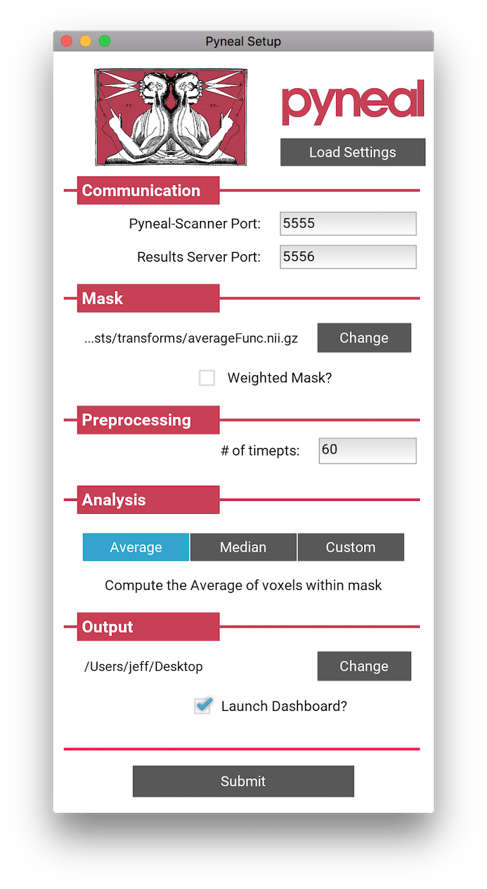
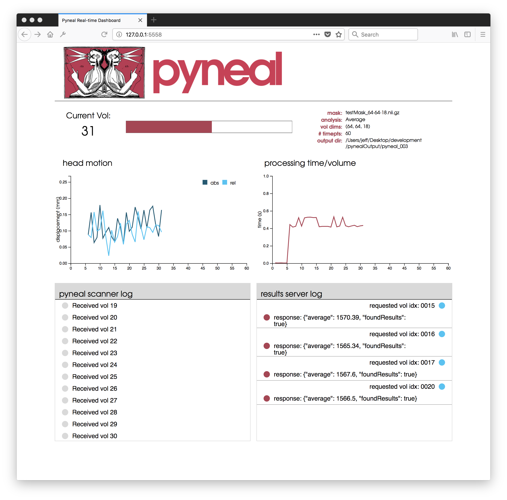
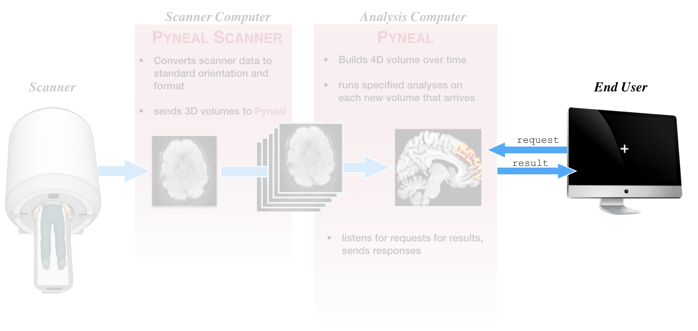

Quick Overview¶
This section will provide a quick overview of running a scan with Pyneal. The aim is to familiarize you with the interface and commands you would use during a scan session, without getting lost in the details about what is happening underneath the hood.
For a more in-depth discussion of the main components, see Pyneal Scanner (detailed) and Pyneal (detailed).
Data flow¶
This schematic gives a very broad overview of the path that data follows throughout a real-time scan with Pyneal

- Once the scan begins, raw images are collected by Pyneal Scanner, and then converted and reoriented to a standardized format (see image orientation for more info).
- Pyneal Scanner exports converted 3D volumes to Pyneal.
- Pyneal receives 3D volumes, and concatenates them into a 4D volume over time throughout the scan. With every new 3D volume that arrives, Pyneal will preprocess the volume, and run any specified analyses.
- The analysis results for each volume are stored on a separate server, which listens for requests from remote end users or devices throughout the scan (see requesting results for more info).
- Anytime a request is received, the server checks to see if that volume has been processed yet. If so, it returns the results; if not, it sends a message saying that volume has not been processed yet
Pyneal Scanner¶

First step, make sure you've followed the instructions at setup: Pyneal Scanner to configure Pyneal Scanner to your environment.
To launch Pyneal Scanner from the scanner computer, open the command line and navigate to the pyneal_scanner directory. From the pyneal_scanner directory, type:
python pynealScanner.py
If you have set up Pyneal Scanner correctly, you will see a print out of your settings, info about any existing series directories in the scannerBaseDir path, and a message that Pyneal Scanner is attempting to connect to Pyneal over the specified pynealSocket:
===============
SCANNER SETTINGS:
pynealSocketHost: 127.0.0.1
pynealSocketPort: 5555
scannerBaseDir: /path/to/scanner/baseDir
scannerMake: GE
============
Session Dir:
/path/to/scanner/baseDir/p1/e666
Series Dirs:
s1923 23.6 MB 5 min, 13 s ago
s1925 26.2 MB 1 min, 10 s ago
MainThread - Connecting to pynealSocket...
Once you launch Pyneal on the analysis computer, you will see a confirmation that Pyneal Scanner has connected to Pyneal, and is now waiting for new data to arrive from the scanner:
MainThread - pynealSocket connected
MainThread - Waiting for new seriesDir...
For a more detailed look at how Pyneal Scanner works, see Pyneal Scanner (detailed)
Pyneal¶

First step, make sure you've followed the instructions at setup: Pyneal to configure Pyneal to your environment.
To launch Pyneal from the analysis computer, open the command line and navigate to the pyneal directory. From the pyneal directory, type:
python pyneal.py
The GUI will appear, allowing you to enter the appropriate settings for your environment/session:

Once you hit submit, the command line will print a message showing you where log files for the current series will be stored, as well as all of the configuration settings for this series:
Logs written to: /path/to/outputDir/pyneal_001/pynealLog.log
MainThread - Setting: analysisChoice: Average
MainThread - Setting: dashboardClientPort: 5558
MainThread - Setting: dashboardPort: 5557
MainThread - Setting: launchDashboard: True
MainThread - Setting: maskFile: /path/to/maskFile.nii.gz
MainThread - Setting: maskIsWeighted: False
MainThread - Setting: numTimepts: 60
MainThread - Setting: outputPath: /path/to/outputDir
MainThread - Setting: pynealHost: 127.0.0.1
MainThread - Setting: pynealScannerPort: 5555
MainThread - Setting: resultsServerPort: 5556
MainThread - Setting: seriesOutputDir: /path/to/outputDir/pyneal_001
At the end of the message, you'll see a status indicator for the various subcomponents of Pyneal:
MainThread - ScanReceiver Server alive and listening....
Waiting for connection from pyneal_scanner
MainThread - Results Server alive and listening....
If everything is working properly, it'll say that both the ScanReceiver Server and Results Server are alive and listening. (for more information about what these components are doing, see Pyneal (detailed).
You should also see a message indicating that Pyneal is waiting to connect to Pyneal Scanner. Once you launch Pyneal Scanner, this message will update to:
Received message: hello from pyneal_scanner
In addition to the command line output, you can monitor the status of the scan from the web-based dashboard.

The dashboard will launch automatically, but if you happen to close the window you can relaunch it at any time during the scan by opening a webbrowser and entering the URL 127.0.0.1:<dashboardClientPort>, where <dashboardClientPort> can be found from series configuration settings that are printed to the command line. For example, using the settings from above, the URL would be: 127.0.0.1:5558
The dashboard contains:
- progress bar indicating the % completed of the current scan
- head motion plot showing relative (to ref volume) and absolute displacement (in mm)
- scanner communication log showing volume indices as they arrive from the scanner
- processing time plot showing processing time per volume (in sec)
- request log showing incoming requests for results and each corresponding reply
After the scan has completed, the seriesOutputDir will contain the folling output files:
pynealLog.log- detailed log messages from the current scanresults.json- JSON formatted file containg all of the analysis results from the current scanreceivedFunc.nii.gz- nifti formatted 4D file containing the series data itself, as received by Pyneal, from the current scan
For a more detailed look at how Pyneal works, see Pyneal (detailed)
End User¶

We refer to any component that requests results from Pyneal during a scan as an End User. For instance, a potential End User could be task presentation software that periodically makes requests for analysis results in order to update a neurofeedback display for the participant.
For more details about how to format requests and parse responses, see Requesting Results